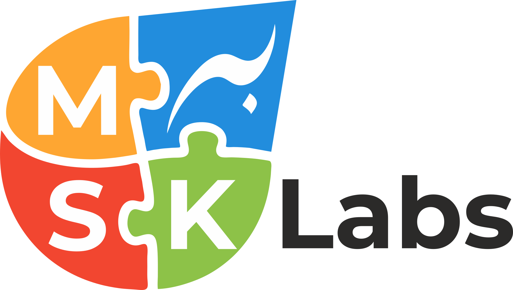

Sorunuzun cevabını arama çubuğunu kullanarak veya aşağıdan filtreleyerek bulabilirsiniz.
Destek ekibimiz 24 saat içinde yanıt vermek üzere hazır. Our support team is ready to respond within 24 hours.